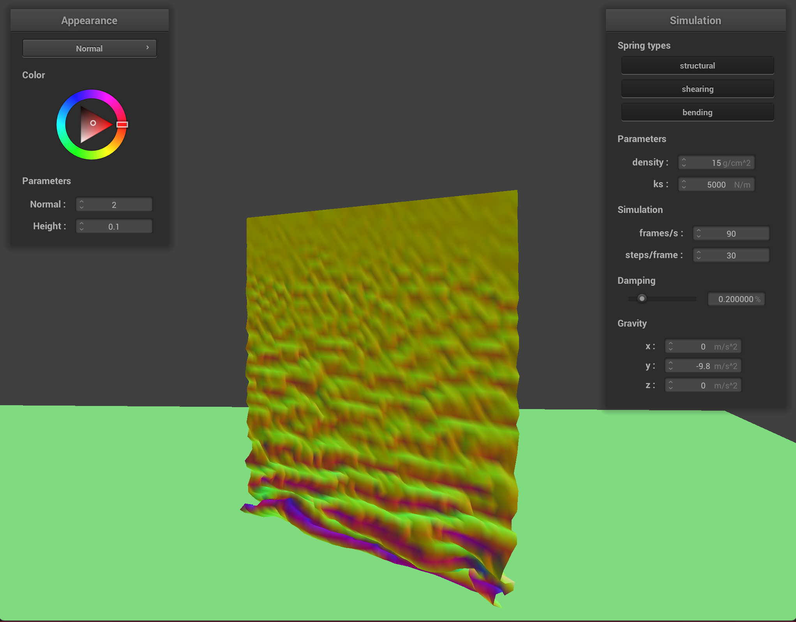
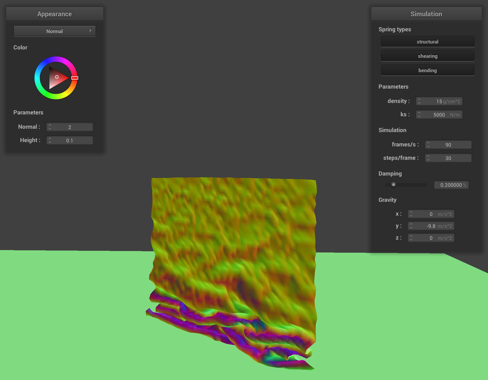
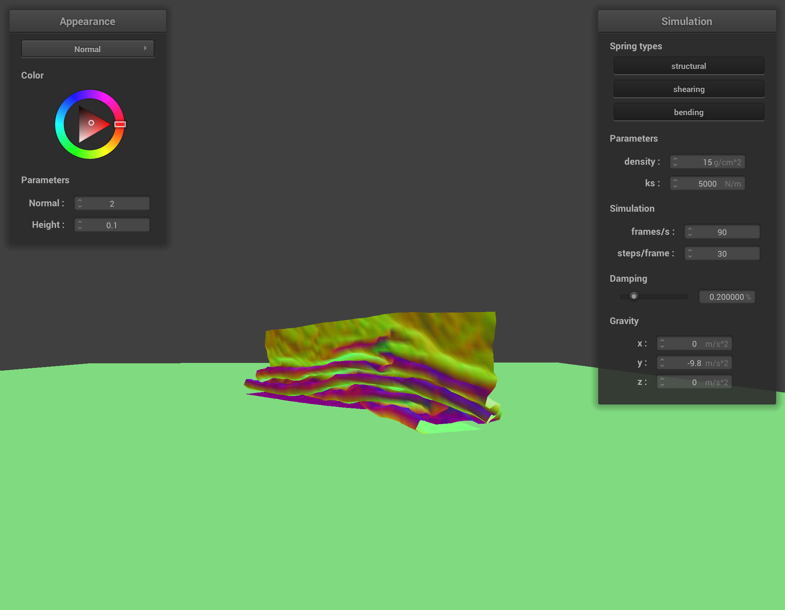
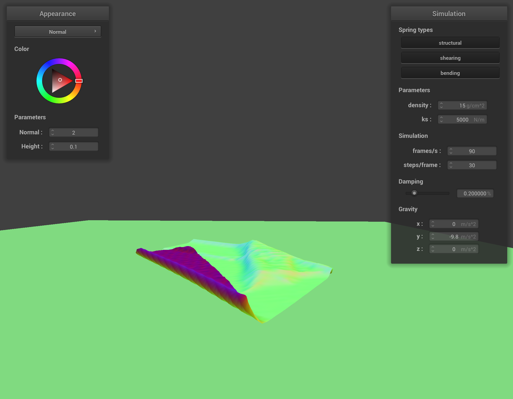
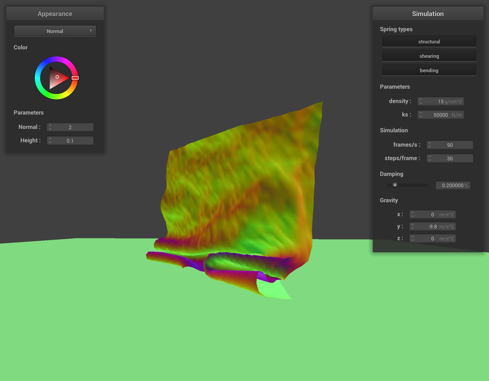
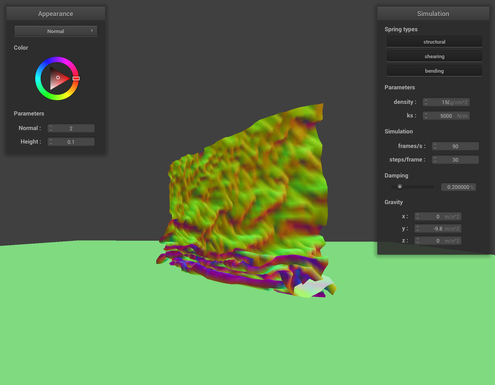

Overview
In this task, we prevented the cloth from intersecting itself. To do this, we check if two point masses ever get too close to each other (their distance is less than the thickness of the cloth), and if they are, force them apart. There was also some optimization necessary to prevent having to do $n^2$ collision checks per timestep, which is way too intensive for a real time simulation, but that's basically all there is to it!
What it looks like
We have some sample images of self-collision. First, we have some images throughout different stages of the process with default parameters. As we move from left to right, more time has passed since the start of the simulation:
   
In the early collision, we have ripples propagating back up through the cloth. We can also see the cloth beginning to fold over itself. In the next image, we can see the cloth draping over itself many times and even some larger disturbances in the surface that hasn't yet collided with itself. Next, the cloth is almost completely folded over itself. We can see that the bottom part has not fully come to rest, either; it's flattening out as more of the cloth piles on top of it. (This behavior is a little unnatural; you would expect this to happen a little bit, but friction should prevent major shifts in the cloth's movement. However, we didn't implement any friction, so the cloth flattens out much more than would happen in the real world.) Finally, the cloth flattens out almost completely, spreading out significantly and coming (almost) fully to rest.Tweaking some parameters
Changing things like the density/spring constant affects how the cloth folds in on itself. From our experiments in task 2, we know that increasing(/decreasing) density has essentially the same effect as decreasing(/increasing) the spring constant, so we only show two tweaks: increasing the spring constant and increasing the density. The first image has an increased spring constant, making the cloth more stiff:

We can see the cloth doesn't fold in on itself nearly as much; there are fewer, wider folds. Also, the ripples from the self collision propagate up the cloth less when compared to the default settings. This next image has an increased density, which makes the cloth less stiff:
The effect here is to increase the number of times the cloth folds in on itself. We can also see the surface of the cloth is much more disturbed above the parts that have already self-collided. It looks like having a relatively stronger corrective force makes the cloth less likely to fold over itself, and the opposing effect for a weaker corrective force.